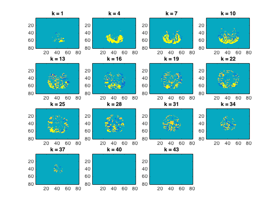
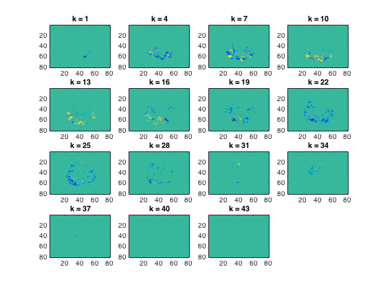

Multiple comparison correction with Threshold-Free Cluster Enhancement
This example demonstrates cosmo_cluster_neighborhood and cosmo_montecarlo_cluster_stat
Note: this example shows multiple-comparison for a single subject, but the same logic can be applied to a group of subjects to do a group analysis.
- For CoSMoMVPA's copyright information and license terms, #
- see the COPYING file distributed with CoSMoMVPA. #
Contents
Define data
config=cosmo_config(); data_path=fullfile(config.tutorial_data_path,'ak6','s01'); targets=repmat(1:6,1,10); chunks=floor(((1:60)-1)/6)+1; ds = cosmo_fmri_dataset(fullfile(data_path,'glm_T_stats_perrun.nii'),... 'mask',fullfile(data_path, 'brain_mask.nii'), ... 'targets',targets,'chunks',chunks); % There are 10 chunks, for which the data is assumed to be independent. % Construct a dataset with 10 samples corresponding to each chunk, with % the average value across all six targets. Each sample is considered to be % the same condition, namely the effect of the stimulus-versus-baseline % effect; thus all target values must be set to 1. % % Use either: % - cosmo_split and cosmo_stack % - cosmo_average_samples % - (for advanced users) cosmo_fx % % Assign the result to a variable 'ds_stim' % >@@> ds_stim=cosmo_fx(ds,@(x)mean(x,1),{'chunks'}); % % alternative: % ds_stim=ds; % ds_stim.sa.targets(:)=1; % ds_split=cosmo_split(ds_stim,{'chunks'}); % % for k=1:numel(ds_split) % ds_avg_k=cosmo_slice(ds_split{k},1); % ds_avg_k.samples=mean(ds_split{k}.samples,1); % ds_split{k}=ds_avg_k; % end % % ds_stim=cosmo_stack(ds_split); % % <@@<
Define a cluster neighborhood for this dataset and assign the result to
a variable 'cl_nh'. hint: use cosmo_cluster_neighborhood >@@>
cl_nh=cosmo_cluster_neighborhood(ds_stim); % <@@< % Show a plot with the sorted number of neighbors % for each voxel % >@@> n_neighbors_per_feature=cellfun(@numel,cl_nh.neighbors); plot(sort(n_neighbors_per_feature)) % <@@<
+00:00:11 [####################] -00:00:00 mean size 25.5

Run cosmo_montecarlo_cluster_stat
% There is one condition per chunk; all targets are set to 1. % Thus the subsequent anaylsis is a one-sample t-test. % Note: if this was a group analysis, then each sample (row in ds.samples) % would contain data from one subject; each unique value in .sa.chunks % would correspond to one subject; and each unique value in .sa.targets % would correspond to a condition of interest. % Since this is a one-sample t-test against a mean of zero, we set this as % a (required) option opt=struct(); opt.h0_mean=0; % set the number of iterations ('niter' option). % At least 10000 is adviced for publication-quality analyses; because that % takes quite a while to compute, here we use 200 % >@@> % Note: for publication-quality analyses, niter=10000 or more is % recommended opt.niter=200; % <@@< % using cosmo_montecarlo_cluster_stat, compute a map with z-scores % against the null hypothesis of a mean of zero, corrected for multiple % comparisons. Store the result in a variable named 'tfce_z_ds_stim' % >@@> tfce_z_ds_stim=cosmo_montecarlo_cluster_stat(ds_stim,cl_nh,opt); % <@@< cosmo_plot_slices(tfce_z_ds_stim);
+00:04:28 [####################] -00:00:00 p = 0.040 / 0.000 [+/-0.035] (left/right)
Using the same logic, run a two-sample t-test for primates versus bugs
% >@@> primates_insects_mask=cosmo_match(ds.sa.targets,[1 2 5 6]); ds_primates_insects=cosmo_slice(ds, primates_insects_mask); % set primates=1, insects=2 ds_primates_insects.sa.targets(cosmo_match(... ds_primates_insects.sa.targets,[1 2]))=1; ds_primates_insects.sa.targets(cosmo_match(... ds_primates_insects.sa.targets,[5 6]))=2; % compute average for each unique combination of targets and chunks ds_avg_primate_insects=cosmo_average_samples(ds_primates_insects); cl_nh=cosmo_cluster_neighborhood(ds_avg_primate_insects); opt=struct(); % set the number of iterations. % At least 10000 is adviced for publication-quality analyses; because that % takes quite a while to compute, here we use 200 % Note: for publication-quality analyses, niter=10000 or more is % recommended opt.niter=200; tfce_z_ds_primate_vs_insects=cosmo_montecarlo_cluster_stat(... ds_avg_primate_insects,cl_nh,opt); % <@@< cosmo_plot_slices(tfce_z_ds_primate_vs_insects);
+00:00:07 [####################] -00:00:00 mean size 25.5 +00:04:41 [####################] -00:00:00 p = 0.000 / 0.000 [+/-0.035] (left/right)